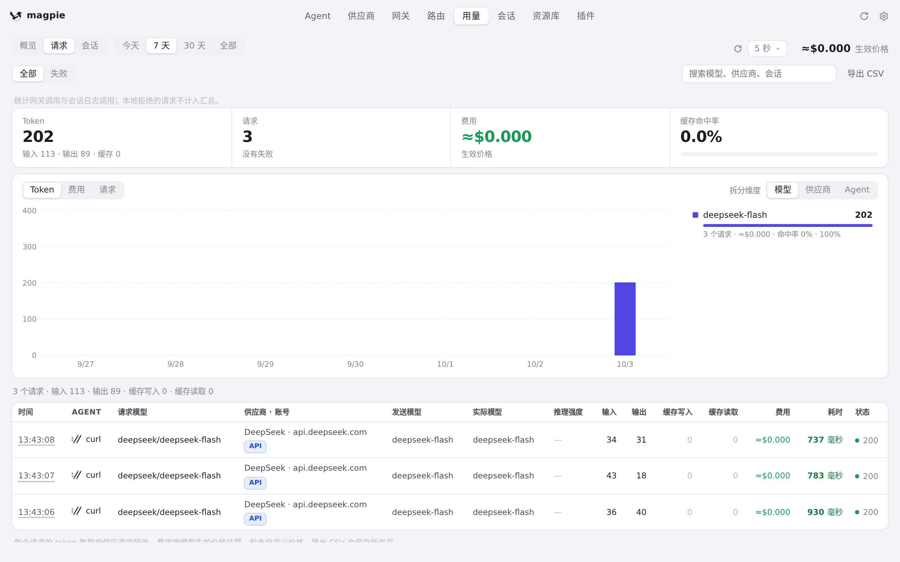
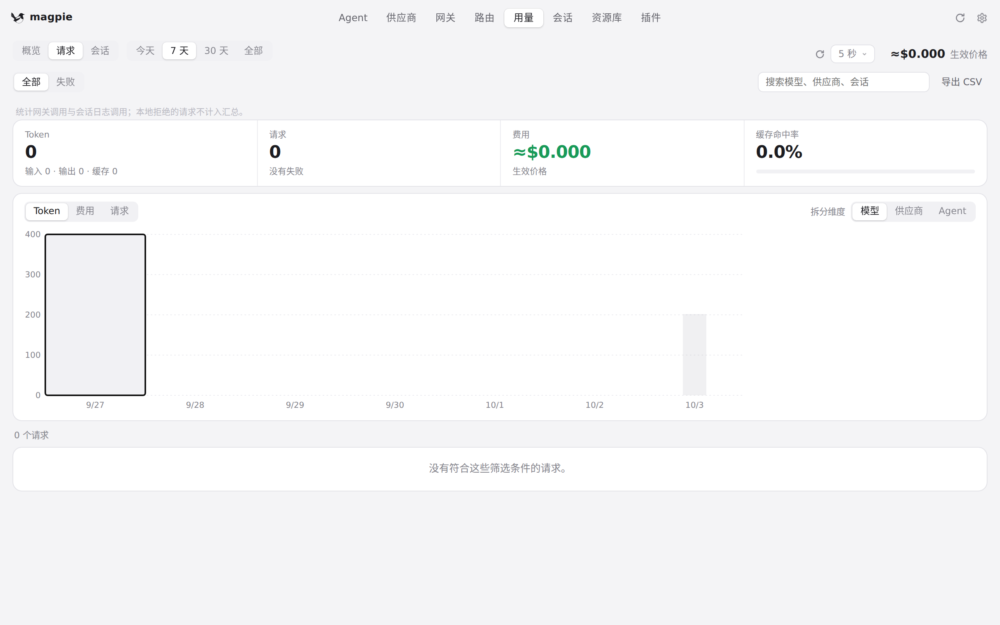
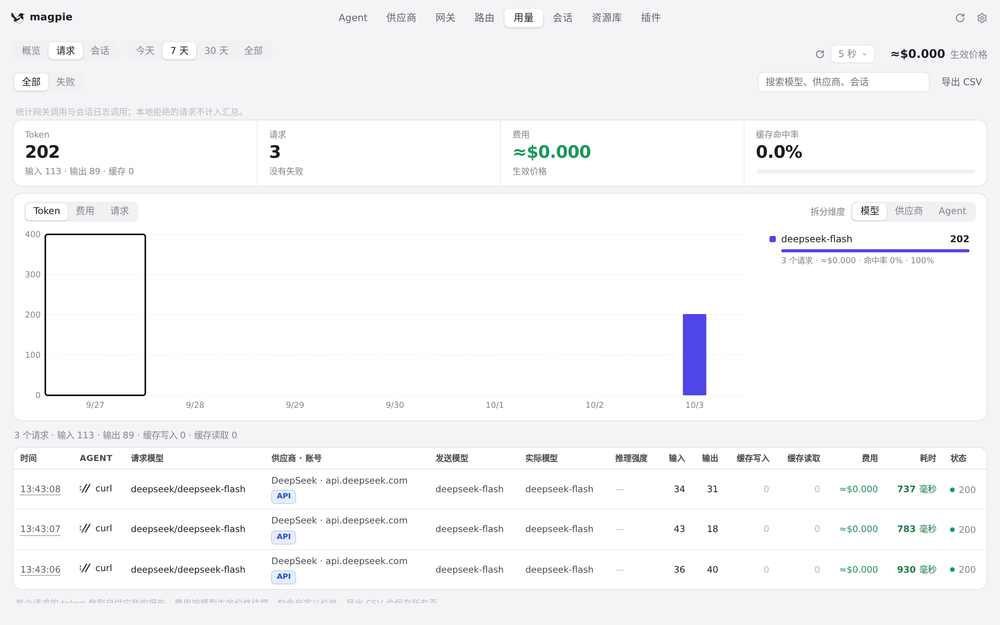
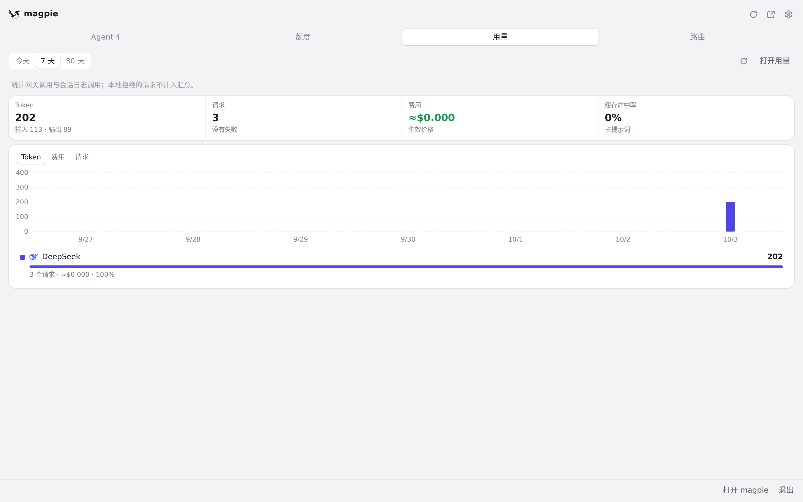
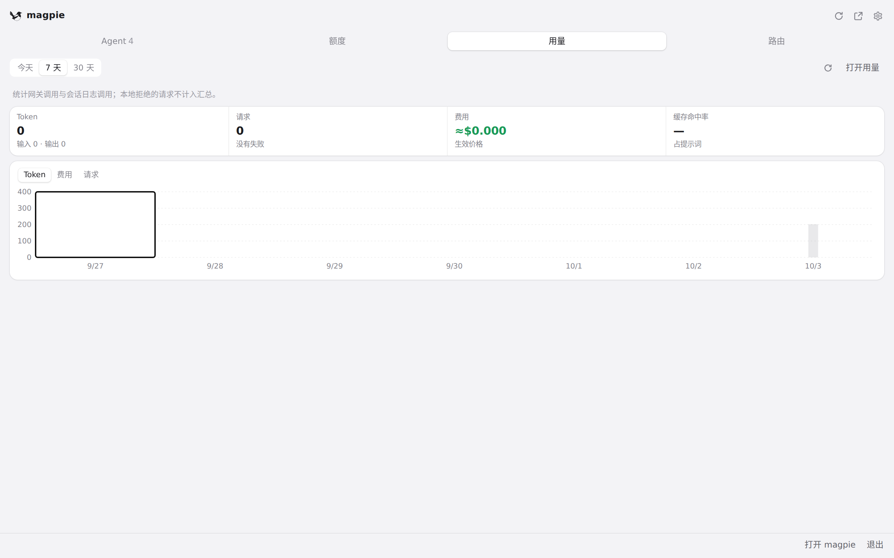
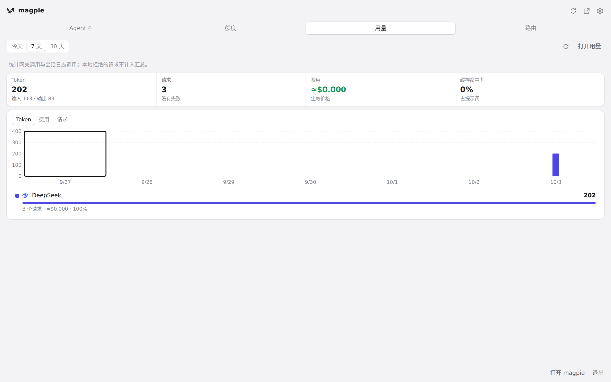

#689 界面预览
commit 6a52aac · 回到 PR · 用量图表里点击某一天，现在按当前选择直接取反（响应还没回来时再点一次也能在同一时刻取消选中），重绘完成后把键盘焦点还给同一天；按天筛选的 CSV 下载与桌面导出文件名改为 magpie-requests-day-YYYY-MM-DD.csv，周期文件名与重名后缀不变。
红线是鼠标走过的轨迹，红色圆环是一次点击；底部文字是这一步在做什么。空格暂停，← → 逐段查看。

用量页图表按天选择与再次点击 · 「请求」页的图表与请求行，一天一列

用量页图表按天选择与再次点击 · 点击一天后的图表与下方请求行

用量页图表按天选择与再次点击 · 再次点击同一天后的图表与下方请求行

菜单栏面板里的用量图表 · 面板的用量图表

菜单栏面板里的用量图表 · 点击一天后的面板

菜单栏面板里的用量图表 · 再次点击同一天后的面板